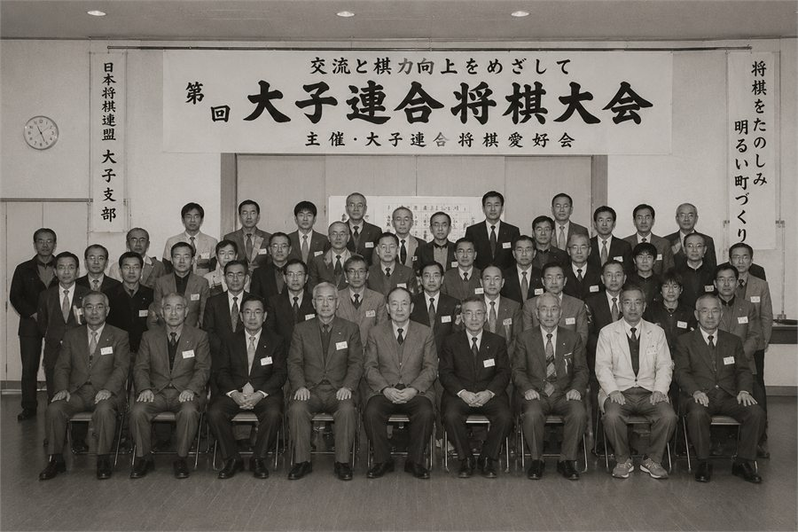
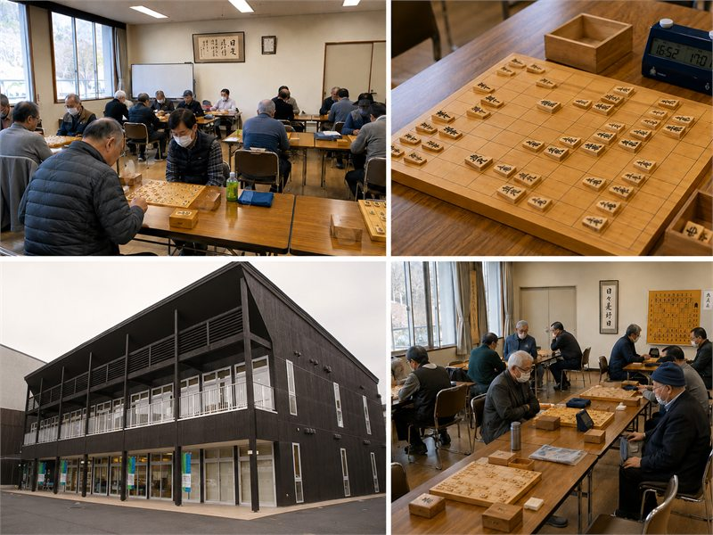
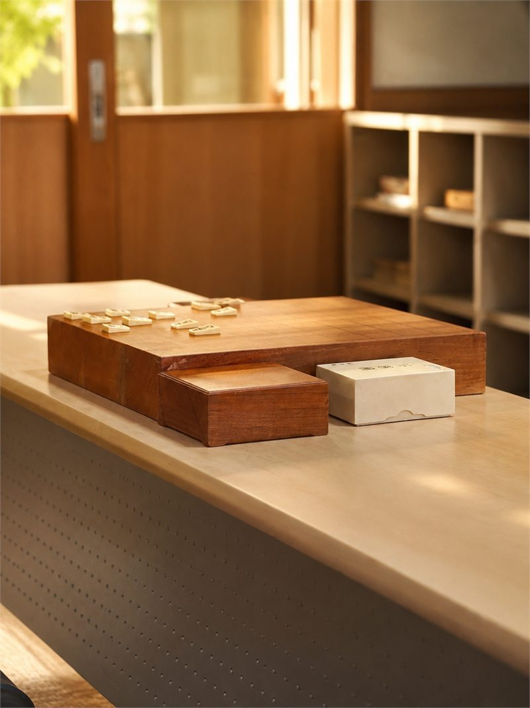
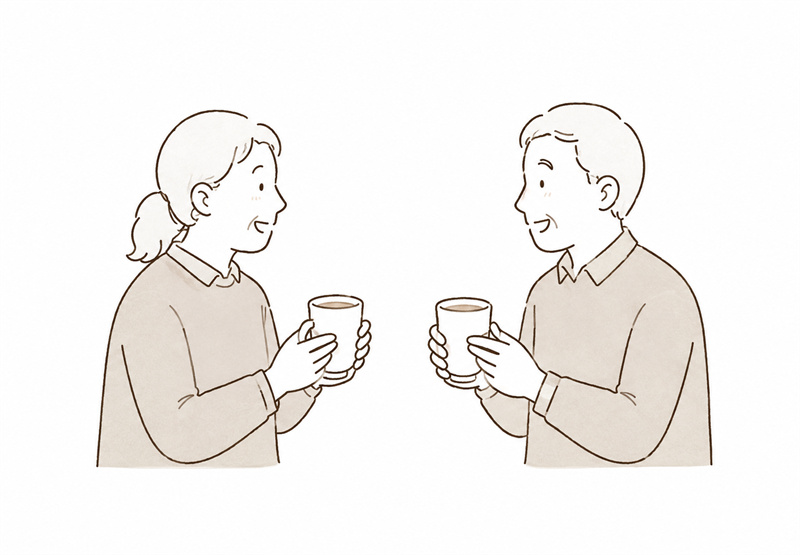

どなたでも歓迎
初めての方、久しぶりの方も、まずはお気軽にご相談ください。
勝ち負けだけでなく、顔を合わせて話す時間、教え合う時間を大切にしています。
初めての方、久しぶりの方も、まずはお気軽にご相談ください。
自由対局を中心に、それぞれの棋力に合わせて楽しく指しています。
将棋を通じて、世代や地域をこえた交流を大切にしています。

かつては「大子連合将棋大会」を開催し、町内外の将棋愛好家が集まる交流と棋力向上の場として親しまれてきました。その歴史と精神は、現在の活動にも受け継がれています。
落ち着いた雰囲気の中で、盤を囲みながら思い思いに将棋を楽しんでいます。



いきいきサロン将棋くらぶ
お休みのお知らせ
大子町文化福祉会館まいんで活動しています。見学をご希望の方は、開催日をご確認のうえお越しください。